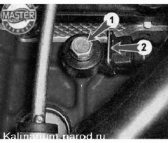
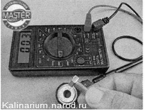

Датчик детонации снятие и проверкаДля выполнения работы потребуются: — мультиметр (в режиме вольтметра); — смотровая канава или эстакада. Снятие 1. Подготавливаем автомобиль к выполнению работы. 2. Снимаем брызговик двигателя или защиту картера (если установлена). 3. Нажав на фиксатор 2, отсоединяем колодку жгута проводов от датчика, торцовым ключом на 13 мм отворачиваем болт 1 крепления датчика к блоку цилиндров.  4. Извлекаем датчик из-под впускного модуля. Проверка 1. Подсоединяем к выводам датчика мультиметр (в режиме вольтметра с пределом измерения до 200 мВ). 
2. Металлическим предметом (болт, отвертка) слегка постукиваем по датчику, при этом на вольтметре должны наблюдаться скачки напряжения. Неисправный датчик не реагирует на удары. В этом случае заменяем его. Замечание Более точно датчик можно проверить только на специальном стенде. Установка Устанавливаем датчик в последовательности, обратной снятию. |